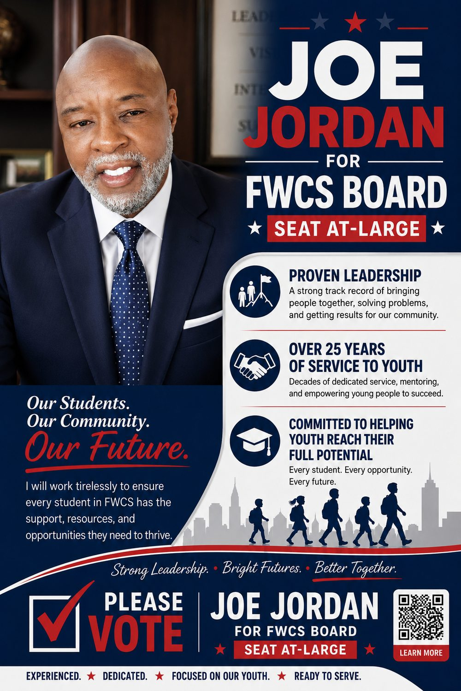
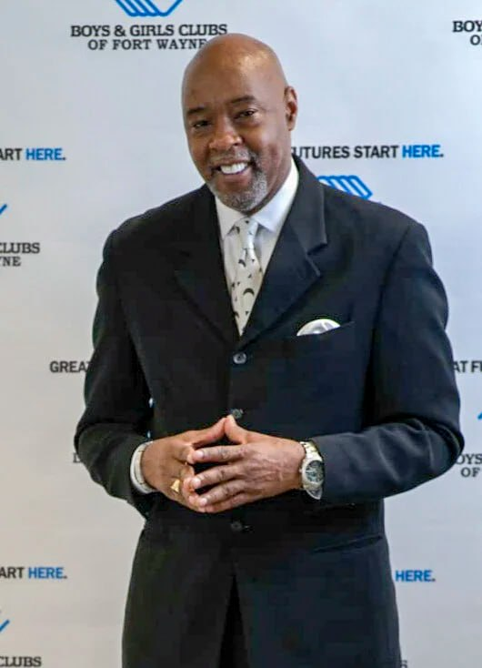
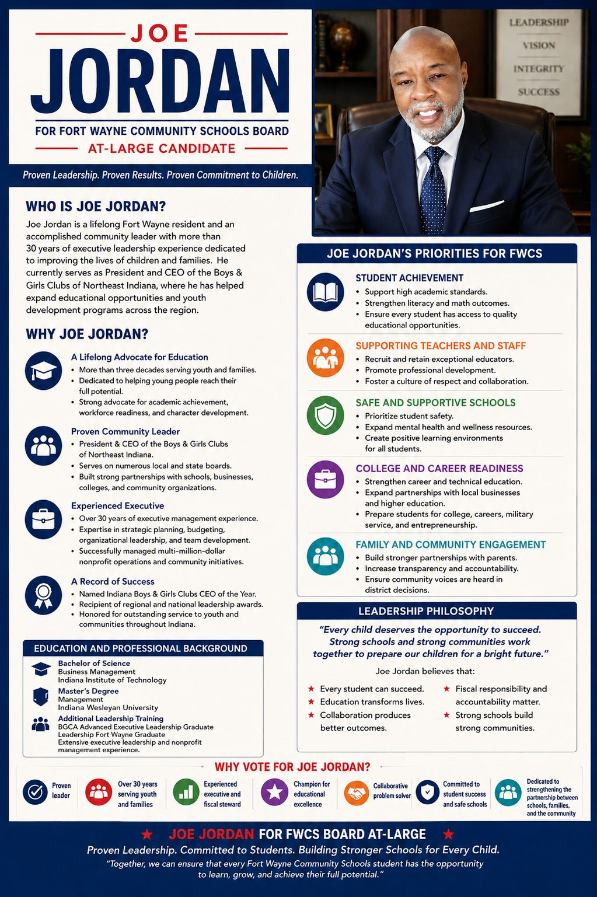

I will work tirelessly to ensure every student in FWCS has the support, resources, and opportunities they need to thrive.


Joe Jordan is a lifelong Fort Wayne resident and an accomplished community leader with more than 30 years of executive leadership experience dedicated to improving the lives of children and families.
He currently serves as President and CEO of the Boys & Girls Clubs of Northeast Indiana, where he has helped expand educational opportunities and youth development programs across the region.
More than three decades of proven leadership in youth and family development — the exact experience our schools need.
Five priorities to build stronger schools for every Fort Wayne child.
"Every child deserves the opportunity to succeed. Strong schools and strong communities work together to prepare our children for a bright future."

Everything about Joe's background, priorities, and vision for Fort Wayne Community Schools — in one page. Print it, share it, or hand it to a neighbor.
Grassroots support is what wins a school board race. Every gift — large or small — helps Joe reach more Fort Wayne families before election day.
Contributions are not tax-deductible. Payment processing will be handled by a compliant platform (Anedot) that collects the donor information required by Indiana law. Final disclaimers to be confirmed with the campaign treasurer.
Add your name and we'll keep you posted on the campaign — plus ways to help between now and election day.
Proven Leadership. Committed to Students. Building Stronger Schools for Every Child.
"Together, we can ensure that every Fort Wayne Community Schools student has the opportunity to learn, grow, and achieve their full potential."